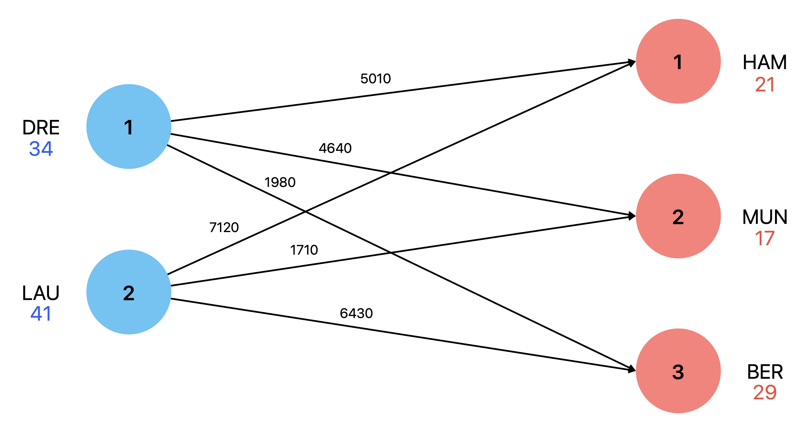
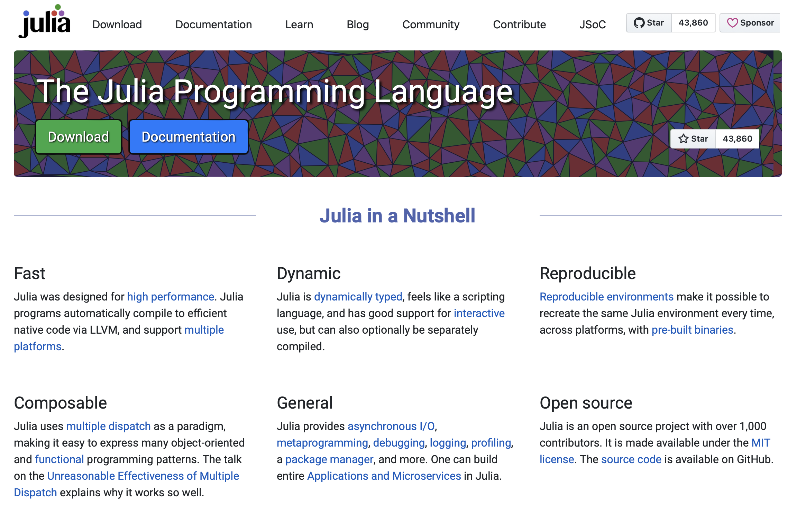

Lecture I - Welcome and Introduction
Applied Optimization with Julia
University of Hamburg - Fall 2024
About this Course
About me
- Field: Optimizing and simulating complex systems
- Languages: of choice: Julia, Python and Rust
- Interest: Modelling, Simulations, Machine Learning
- Teaching: OR, Algorithms, and Programming
- Contact: tobias.vlcek@uni-hamburg.de
Tip
I really appreciate active participation and interaction!
Course Structure
Lectures
- Every Tuesday between 10.15 AM and 11.45 AM
- First four lectures repeat modelling and programming
- Later lectures discuss practical problems and implementation
- Lectures are interactive → We discuss approaches!
- Communication takes place via OpenOlat and E-Mail
Tutorials
- Tutorials every Friday between 8.15 AM and 9.45 AM
- In these tutorials we are working on assignments
- Please bring a laptop with Windows, macOS, or Linux!
- This Friday there is no tutorial!
Assignments
- Based on applied problems of the lecture
- Up to 3 students can solve assignments together
- Submitted solutions earn bonus points for the exam
- Max. 0.5 point per tutorial
Note
Bonus points only count if the mark is at least 4.0!
Course Objective
Applied Optimization
- Real-world problems can be addressed with models
- Our objective is to foster your interest in the topic
- Enable you to recognize and solve problem structures
- Includes problem understanding and implementation
Research in Operations Research
- Part of the University of Hamburg Business School
- Aiming to solve real-world problems
- Or improving our theoretical understanding
- Publication in journals and conferences
Note
We are also happy to supervise Bachelor and Master theses!
National and international journals
- European Journal of OR
- Journal of the Operational Research Society
- Journal on Applied Analytics
- Management Science
- Operations Research
- OR Spectrum
Real-World Applications
Brewery Production Planning
Mickein, Koch, and Haase (2022)
Police Service District Planning
Vlćek, Haase, Fliedner, et al. (2024)
Venue Seating under COVID-19
Usama Dkaidik and Matthes Koch; Current research with a likely paper submission in 2024
Metro Inflow Management
Vlćek, Haase, Koch, et al. (2024)
Split-Order Minimization
Vlćek and Voigt (2024)
Crowd Management
Haase et al. (2016)
Lecture Preview
Part I
- Welcome and Introduction
- First Steps in Julia
- Packages and Data Management
- Modelling with JuMP
Part II
- Beer Production Planning
- Minimizing Split Orders in E-Commerce
- Periodic Library Routing
- Police Districting
Part III
- Safety Planning for the Islamic Pilgrimage in Mecca
- Passenger Flow Control in Urban Rail
- Arena Seat Planning under Distancing Rules
- Sales Force Deployment for Teams
- Recap and Discussion
Julia Programming Language
Choice of Programming Language

Question: Have you ever heard of Julia?
Why Julia?
- Designed to be:
- as general as Python
- as statistics-friendly as R
- as fast as C++!
Tip
Allows for fast data workflows, particularly in scientific computing!
Syntax
- Dynamically-typed syntax just like Python
- Similar to R, Matlab and Python - not like C++
- In comparison, accessible and easy to learn!
- No need to worry about memory management!
JuMP
- Package for algebraic modeling in Julia
- Simplifies solving complex optimization problems
- Provides a high-level, user-friendly interface
- Useful for operations research and data science
Tip
JuMP is an alternative to Pyomo, GAMS, and AMPL!
Must it be a new language?
- Yes, but no need to worry!
- Julia is quite similar to Python and R
- We will learn the syntax together in the first part
- It is helpful to switch languages from time to time
Algebraic Modeling
Do you have
experience with
algebraic modeling?
What is algebraic modeling?
- A “mathematical language” for optimization problems
- Allows for describing complex systems and constraints
- Based on linear algebra (Equations and Inequalities)
How to learn algebraic modeling?
- Practice, practice, and practice!
- Understand standard models and their approach
- Develop an understanding of constraints
- Understand the structure of a models solution space
- Use an available algorithms to determine solutions
Central Questions
- What is to be decided?
- What is relevant to the decision?
- What information is given and relevant?
- What parameters (data) are needed?
- Which variables and of which type are needed?
Tip
Modeling is a creative process!
Model Components
- Objective function
- Constraints
- Variables
Note
We will go through these components step by step in each lecture!
Linear Optimization Model
Basic Model Formulation
\[ \begin{aligned} &\text{maximize} \quad F = \sum_{j\in \mathcal{J}} c_j \times X_j \end{aligned} \]
subject to
\[ \begin{aligned} &\sum_{j\in \mathcal{J}} a_{i,j} \times X_j \le b_i && \forall i \in \mathcal{I} \\ &X_j \ge 0 && \forall j \in \mathcal{J} \end{aligned} \]
Model Components
\[ \begin{aligned} \mathcal{I} &: \text{set of $i \in \mathcal{I}$,}\\ \mathcal{J} &: \text{set of $j \in \mathcal{J}$,}\\ F &: \text{Objective function variable,}\\ X_{j} &: \text{decision variables,}\\ c_{j} &: \text{objective function coefficients,}\\ a_{i,j} &: \text{parameters,}\\ b_{i} &: \text{parameters} \end{aligned} \]
Question: Have you ever seen something like this before?
What is this good for?
- Good Question! A lot of things:
- Modeling real-world problems
- Solving complex systems
- Optimizing resource allocation
- Decision-making under constraints
- Simulation and prediction
Solar Panel Transport
Case: Solar Panel Transport
Description
A company is producing solar panels in Dresden and Laupheim and has to transport them to new solar farms near Hamburg, Munich, and Berlin. The quantities offered and demanded (truckloads) and the transport costs per truckload in Euro are summarized in the following table.
Transport Costs
| Origin/Destination | Hamburg | Munich | Berlin | Available |
|---|---|---|---|---|
| Dresden | 5010 | 4640 | 1980 | 34 |
| Laupheim | 7120 | 1710 | 6430 | 41 |
| Demand | 21 | 17 | 29 |
Example: A truckload from Dresden \(i=1\) to Munich \(j=2\) costs \(c_{12}=4640\) Euro. Moreover, it is necessary to fulfil all customer demands, as the contract has been signed.
Graphical Illustration
Understanding the Problem
What are we trying?
First, we always need to understand the objectives.
Question: What are our possible objectives?
Minimizing the transport costs over all truckloads while meeting the demand based on the available solar panels adhering to the available panels.
Let’s break it down
step by step!
Sets
Remember, sets are collections of elements
Question: What sets are needed?
\[ \begin{aligned} \mathcal{I} &: \text{Set of production sites, indexed by } i \text{ with } i \in \{1, \ldots, |\mathcal{I}|\}, \\ \mathcal{J} &: \text{Set of customers, indexed by } j \text{ with } j \in \{1, \ldots, |\mathcal{J}|\}. \end{aligned} \]
Tip
We often use plural names for sets and a caligraphic letter, e.g., \(\mathcal{I}\) and \(\mathcal{J}\).
Parameters
Parameters are fixed values that are given.
Question: What parameters are needed?
\[ \begin{aligned} c_{i,j} &: \text{Costs per truck load for transport from } i \text{ to } j, \\ a_i &: \text{Available truck loads at } i, \\ b_j &: \text{Customer demands at } j. \end{aligned} \]
Tip
We usually use the corresponding lower-case letter, e.g., \(c\), \(a\), and \(b\).
Decision Variable
- Decision variables are the values we are trying to find
- Here, our objective is to minimize the transport costs
Question: What decision variables are needed?
\[ X_{i,j} \text{Trucks that deliver panels from site } i \text{ to customer } j. \]
Tip
We use upper-case letters to distinguish variables from parameters, e.g., \(X\).
These are our
building blocks!
Objective Function
- The objective function is the value we are trying to minimize
- Formalized as a sum of decision variables and parameters
Question: Do you remember the objective?
Minimizing the Transport Costs
Minimize the transport costs over all truckloads while meeting the demand based on the available solar panels adhering to the available panels.
Question: How can we write this down?
\[ \text{Minimize} \quad \sum_{i \in \mathcal{I}} \sum_{j \in \mathcal{J}} c_{i,j} \times X_{i,j} \]
Constraints
- Constraints are conditions that must be met
- They limit the solution space!
Question: Objective value without any constraints?
- The value is zero
- We can transport any number of panels
Question: What constraints are needed?
Supply Constraints
Ensure that the number of panels transported from a location does not exceed the available panels.
Question: How can we formalize this?
\[ \sum_{j \in \mathcal{J}} X_{i,j} \leq a_i \quad \forall i \in \mathcal{I} \]
Demand Constraints
Ensure that the demand of each customer is covered.
Question: Any ideas?
\[ \sum_{i \in \mathcal{I}} X_{i,j} = b_j \quad \forall j \in \mathcal{J} \]
Non-negativity Constraints
Ensure no negative number of truckloads are transported.
Question: Has anyone an idea how to write this down?
\[ X_{i,j} \geq 0 \quad \forall i \in \mathcal{I}, \forall j \in \mathcal{J} \]
Transport Problem
The complete model can then be written as:
\[ \begin{aligned} \text{Minimize} \quad F &= \sum_{i \in \mathcal{I}} \sum_{j \in \mathcal{J}} c_{i,j} \times X_{ij} \\ \text{subject to:} \quad &\sum_{j \in \mathcal{J}} X_{i,j} \leq a_i \quad &&\forall i \in \mathcal{I} \\ &\sum_{i \in \mathcal{I}} X_{i,j} = b_j \quad &&\forall j \in \mathcal{J} \\ &X_{i,j} \geq 0 \quad &&\forall i \in \mathcal{I}, \forall j \in \mathcal{J} \end{aligned} \]
Inequality Constraints
Question: Could we replace \(=\) by \(\geq\) in the demand constraint?
- Yes, we could!
- We could deliver more than the demand
- But this would not happen here
Question: Why won’t we transport more than the demand?
- Due to the associated costs
Any
questions?
Profit Maximization
Description
Unfortunately, the margins on solar panels are low. After the previous contract has been fulfilled, the company produced the same number of panels as before. In addition, all three customers want to order the same number of truckloads with solar panels again. The sales volume per truckload of panels is 11,000 Euros. The complete production of a truckload of solar panels, including materials, costs 6,300 Euros.
New Objective
In the new contract, the company wants to maximize its profits while the demand does not have to be fulfilled.
Question: What changes are necessary?
- We need to change the objective function
- We need to change some parameters
Question: Does our decision variable change?
- No, we still transport truckloads of solar panels
New Parameters
\[ \begin{aligned} p &: \text{Sales volume per truckload of solar panels,} \\ c &: \text{Production costs per truckload of solar panels.} \end{aligned} \]
Question: What is the profit per truckload of solar panels?
\[ p - c \]
Former Model
\[ \begin{aligned} \text{Minimize} \quad F &= \sum_{i \in \mathcal{I}} \sum_{j \in \mathcal{J}} c_{i,j} \times X_{i,j} \\ \text{subject to:} \quad &\sum_{j \in \mathcal{J}} X_{i,j} \leq a_i \quad &&\forall i \in \mathcal{I} \\ &\sum_{i \in \mathcal{I}} X_{i,j} \geq b_j \quad &&\forall j \in \mathcal{J} \\ &X_{i,j} \geq 0 \quad &&\forall i \in \mathcal{I}, \forall j \in \mathcal{J} \end{aligned} \]
New Model
\[ \begin{aligned} \text{Maximize} \quad F &= \sum_{i \in \mathcal{I}} \sum_{j \in \mathcal{J}} (p-c-c_{i,j}) \times X_{i,j} \\ \text{subject to:} \quad &\sum_{j \in \mathcal{J}} X_{i,j} \leq a_i \quad &&\forall i \in \mathcal{I} \\ &\sum_{i \in \mathcal{I}} X_{i,j} \leq b_j \quad &&\forall j \in \mathcal{J} \\ &X_{i,j} \geq 0 \quad &&\forall i \in \mathcal{I}, \forall j \in \mathcal{J} \end{aligned} \]
Do you have
any questions?
Installing Julia
Download and Install Julia
To prepare for the upcoming lectures, we start by installing the Julia Programming Language and an Integrated Development Environment (IDE) to work with Julia.
Installating Julia
- Head to julialang.org and follow the instructions.
Tip
If you are ever asked to add something to your “PATH”, do so!
VS Code
- Next, we are going to install VS Code
- Alternatively, you can install VS Codium
- It is essentially VS Code but without any tracking by MS
Installing VS Code
- Head to the website code.visualstudio.com
- OR to the webside vscodium.com
- Download and install the latest release
Verify the Installation
- Start the IDE and take a look around
- Search for the field “Extensions” on the left sidebar
- Click it and search for “Julia”
- Download and install “Julia (Julia Language Support)”
Create a new file
- Create a new file with a “.jl” ending
- Save it somewhere on your computer
- e.g., in a folder that you will use in the course
Hello World!- Run the file by clicking “run” in the upper right corner
- OR by pressing “Control+Enter” or “STRG+Enter”
Everything working?
- If the terminal opens with a
Hello World!→ perfect! - If not, it is likely that the IDE cannot find the path to Julia
- Try to determine the path and save it to VS Code
- After saving it, try to run the file again
Tip
Don’t worry if it is not running right away. We will fix this together!
Starting with Julia
How to get started?
- Learning a new programming language is a daunting task
- It is best to start with some small, interactive problems
- Then, slowly increase the scope of the tasks
- We will do this together in class!
Note
And that’s it for todays lecture!
We now have covered a first introduction and are ready to start solving some problems in the upcoming lectures.
Questions?
Literature
Literature I
For more interesting literature to learn more about Julia, take a look at the literature list of this course.
Literature II
Lecture I - Welcome and Introduction | Dr. Tobias Vlćek | Home